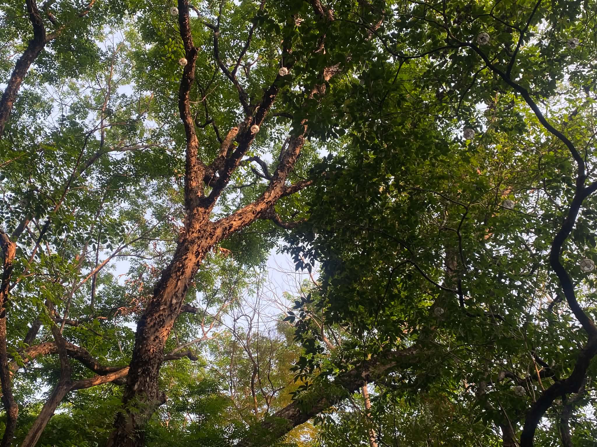

Tambayan for TUPians
A guide for TUP students looking for places to spend their vacant hours.
May A. Bugtong
Hi! I am a 2nd year student at TUP that enjoys exploring new places to spend long vacant hours near the campus.
 My Places Guide
My Places Guide
My Top 5 Most Visited Places
1. National Museum of the Philippines
In front of the Philippine National University
National Museum of the Philippines is great to visit for history and culture enthusiasts. And aside the museum itself, you can relax in the benches in front of it where you can clearly watch the sun set. However, it is not recommended on rainy days or under the scorching sun, especially at noon. You can also find vendors near this place that sells tuhog tuhog and even ice cream.

Flower Beads Keychain
Price: ₱15-20 per flower
handmade bouquet of flower beads that can be attached to keys or bags. Colors and the number of flowers can be customized.
 View details
View details
Handsewn Polka Dot Hobo Bag with Pouches
Price: ₱550
Handsewn polka dot designed hobo bag, coin purse, pencil case and large pouch perfect for carrying your essentials.
 View details
View details
Crocheted Dinosaur Plush with Flower Bouquet and Hat
Price: ₱350
Cute and cuddly crocheted dinosaur plush toy with a floral bouquet and a tiny hat.
 View details
View details
5. Arrocerost Forest Park
Near the Unibersidad de Manila
Arrocerost Forest Park is a lush green space that offers a peaceful retreat from the urban environment. It is a great place for relaxation that offers a respite from the hustle and bustle of city life. The park can be enjoyed by those who loves the diversity of plants and trees. And for those who finds peace in watching how nature can be beautiful just by staring and capturing it just like what i do.
